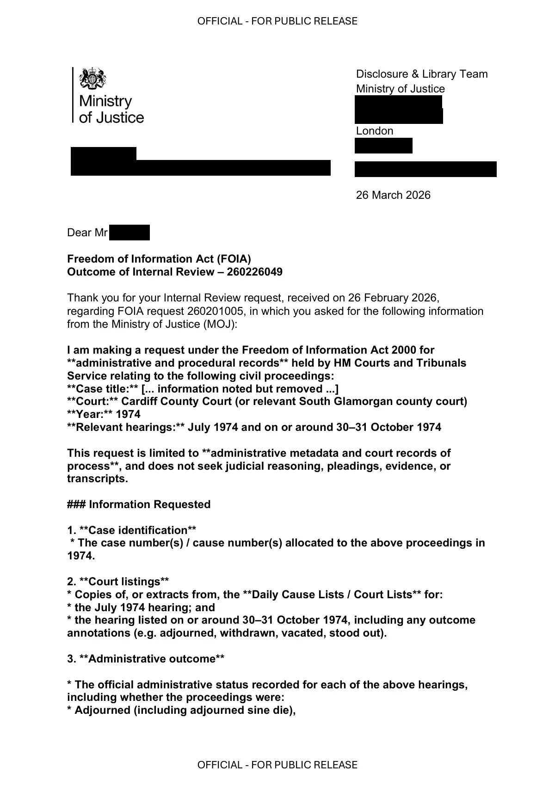

GHF-E106-R74-A1 WhatDoTheyKnow reply
HMCTS internal review 260226049

Transcript
OFFICIAL - FOR PUBLIC RELEASE OFFICIAL - FOR PUBLIC RELEASE Requester [email redacted] Disclosure & Library Team Ministry of Justice [address redacted] London [address redacted] [email redacted] 26 March 2026 Dear Requester Freedom of Information Act (FOIA) Outcome of Internal Review – 260226049 Thank you for your Internal Review request, received on 26 February 2026, regarding FOIA request 260201005, in which you asked for the following information from the Ministry of Justice (MOJ): I am making a request under the Freedom of Information Act 2000 for **administrative and procedural records** held by HM Courts and Tribunals Service relating to the following civil proceedings: **Case title:** [... information noted but removed ...] **Court:** Cardiff County Court (or relevant South Glamorgan county court) **Year:** 1974 **Relevant hearings:** July 1974 and on or around 30–31 October 1974 This request is limited to **administrative metadata and court records of process**, and does not seek judicial reasoning, pleadings, evidence, or transcripts. ### Information Requested 1. **Case identification**
Read more
* The case number(s) / cause number(s) allocated to the above proceedings in
1974.
2. **Court listings**
* Copies of, or extracts from, the **Daily Cause Lists / Court Lists** for:
* the July 1974 hearing; and
* the hearing listed on or around 30–31 October 1974, including any outcome
annotations (e.g. adjourned, withdrawn, vacated, stood out).
3. **Administrative outcome**
* The official administrative status recorded for each of the above hearings,
including whether the proceedings were:
* Adjourned (including adjourned sine die),
OFFICIAL - FOR PUBLIC RELEASE
OFFICIAL - FOR PUBLIC RELEASE
* Stayed,
* Withdrawn,
* Discontinued, or
* Proceeded to final determination.
4. **Judgment / order confirmation**
* Confirmation of whether **any final judgment, possession order, or
declaration of title** was sealed or entered by the court in respect of these
1974 proceedings.
* If no such order was entered, please confirm this explicitly.
5. **Case register / ledger**
* Any surviving **case register entry, index entry, minute book entry, or case
ledger record** showing procedural steps taken and closure status.
6. **File retention and location**
* Whether the original physical case file:
* was archived,
* transferred to The National Archives or a local archive (e.g. Glamorgan
Archives), or
* destroyed;
* including the date of transfer or destruction and the applicable retention
policy, where held.
If any part of this request is considered exempt under Section 32 of the Act, I
ask that HMCTS nonetheless provide **all non-exempt administrative and
metadata information** confirming the procedural status of the proceedings
and the presence or absence of any final court order.
I am content to receive the information in electronic format.
...
I note your position that the information requested "is likely not to be held by
the MOJ" and that if held, it is likely exempt under Section 32 of the FOIA. You
have also suggested I contact the relevant court directly under the appropriate
Procedure Rules.
I would be grateful if you could address the following points and provide a
formal, substantive response to my request under the FOIA:
1. Clarification of Request Scope & Distinction from Judicial Proceedings:
My request was carefully drafted to seek administrative and procedural
metadata, not the content of judicial proceedings. I explicitly did not request
"case files, court records, and correspondence relating to judicial decisions"
as characterised in your response. I requested:
Case numbers (an administrative identifier).
Court listing information (an administrative schedule).
OFFICIAL - FOR PUBLIC RELEASE
OFFICIAL - FOR PUBLIC RELEASE
The administrative status of hearings (e.g., adjourned, withdrawn).
Confirmation of whether a final order was sealed (a binary yes/no
administrative fact).
Case register/ledger entries showing procedural steps.
File retention data (an administrative record).
This information relates to the operation and administration of the court, not
the judicial decision-making process. It is the type of data that would be
recorded in court registers and administrative logs, separate from case files
containing evidence and arguments. I therefore ask that you reassess whether
Section 32(1) applies to this specific class of administrative record.
2. Requirement for a Formal Section 32 Refusal Notice:
If, after a proper search, HMCTS's position is that all requested information is
indeed held "only by virtue of being contained in a document filed with or
created by a court... for the purposes of proceedings" (s.32(1)(c)), please issue
a formal refusal notice under Section 17 of the FOIA.
This notice must:
a. State that fact.
b. Specify the exact subsection of Section 32 you are relying upon (e.g.,
s.32(1)(a), (b), or (c)).
c. Explain why that exemption applies to the information requested,
addressing the distinction between administrative metadata and judicial
records noted above.
3. Duty to Provide Advice and Assistance (Section 16):
Under Section 16 of the FOIA, you have a duty to provide advice and
assistance. Your direction to "contact the relevant court or tribunal directly" is
generic. To fulfil this duty, please provide:
a. The specific contact details for the court record holder for the Cardiff
County Court (or relevant South Glamorgan court) for 1974-era records.
b. A clear reference to the "appropriate Procedure Rules" you mention (e.g.,
the specific part of the Civil Procedure Rules or Practice Direction) that govern
access to historical administrative court data of this nature.
c. Guidance on the precise wording or form such a request to the court should
take, given I am seeking administrative metadata rather than case file
contents.
4. Search for Non-Exempt Information & Duty to Confirm or Deny:
Finally, I remind you of your duty under Section 1(1)(a) of the FOIA to confirm
or deny whether you hold the information. Your current response suggests
you may not have conducted a search. Please confirm that a search of relevant
administrative systems (separate from judicial case files) has been conducted
for the requested metadata. Even if some information is exempt under Section
32, other parts (such as current file retention policies for historic records) may
not be...”
OFFICIAL - FOR PUBLIC RELEASE
OFFICIAL - FOR PUBLIC RELEASE
The purpose of an Internal Review is to assess how your FOIA request was handled
in the first instance and to determine whether the original decision given to you was
correct. This is an independent review: the reviewer of this case was not involved in
the original decision.
The response to your original request confirmed the information requested is not
held by the MOJ as a public authority, under the FOIA. After careful consideration
we have concluded that this response was compliant with the requirements of the
FOIA.
Statutory deadline
The statutory deadline for your request was 27 February 2026. The response was
provided on 26 February 2026. The response was therefore compliant with the
timeliness requirements of the FOIA.
Outcome
I have re-considered all aspects of the original decision, including the decision-
making process. I have also made enquiries with the County Court at Cardiff.
The information you have asked for relates to a court case and, as such, that
information, if held, would be held by the County Court, for the County Court’s
purposes.
If information is held only because a court or tribunal is using it, then the MOJ does
not count it as information that it holds for FOIA purposes. A previous Information
Commissioner’s Office (ICO) Decision that supports our position can be obtained
from the following link:
https://ico.org.uk/action-weve-taken/decision-notices/2026/01/ic-396756-z7q8/
In conclusion, I am satisfied that the requested information is not held by the MOJ,
as a public authority, for FOIA purposes. The response you received on 26 February
2026 was correct.
To advise and assist you, courts and tribunals retain their information for no longer
than necessary, in accordance with MOJ Record Retention and Disposition
Schedules (RRDS). They are are available from the following link:
https://www.gov.uk/government/publications/record-retention-and-disposition-
schedules
The County Court’s RRDS is available from the following link:
https://assets.publishing.service.gov.uk/media/682216a253add7d476d81917/county-
court-family-court-court-protection-rrds.pdf
OFFICIAL - FOR PUBLIC RELEASE
OFFICIAL - FOR PUBLIC RELEASE
Under the Public Records Act, older County Court records that are selected for
permanent preservation (after 20 or 30 years) are transferred to an approved
archive. For the case you asked about, any records kept under this rule would have
been sent to Glamorgan Archives, Clos Parc Morgannwg, Leckwith, Cardiff, CF11
8AW, because The National Archive (TNA) lists Glamorgan Archives as the official
place of deposit for Cardiff County Court records.
You can obtain information about the Glamorgan Archives from the following link:
http://www.glamarchives.gov.uk/
Yours sincerely
Operational Support - Knowledge and Information Liaison Officer
National Support Unit | HM Courts &Tribunals Service
Appeal Rights
If you are not satisfied with this response, you have the right to apply to the
Information Commissioner’s Office (ICO). The Commissioner is an independent
regulator who has the power to direct us to respond to your request differently, if he
considers that we have handled it incorrectly.
You can contact the ICO using the Information Commissioner’s Office online portal,
available from the following link:
https://ico.org.uk/make-a-complaint/foi-and-eir-complaints/
Alternatively, you can contact the ICO by writing by post to:
Information Commissioner's Office
Wycliffe House
[address redacted]
Wilmslow
Cheshire
[address redacted]Artifact description
Internal review 260226049 (letter attached): original decision maintained; records selected for preservation would have gone to Glamorgan Archives, the place of deposit for Cardiff County Court records.
| Catalogue ID | GHF-E106-R74-A1 |
|---|---|
| What it is | PDF document from HM Courts and Tribunals Service. Attached to an email received on 26 March 2026, their reference 260226049. 5 pages. |
| From | HM Courts and Tribunals Service |
| Email received | 26 March 2026 |
| Their reference | 260226049 |
| Pages | 5 |
| File | Requester 260226049 FOI IR response.pdf (131 KB) |
| State | Read |
Our integration
HMCTS internal review 260226049: the original decision is maintained. Records selected for preservation would have gone to Glamorgan Archives, the place of deposit for Cardiff County Court records.
Why it matters: it names a specific archive for any surviving case papers from the 1980s proceedings. The Glamorgan Archives requests on the dartboard follow from this.
What cuts against the case: most county court files are not selected for preservation. If nothing reached Glamorgan Archives, that would fit normal practice.
Related: Timeline · Disclosure Dartboard